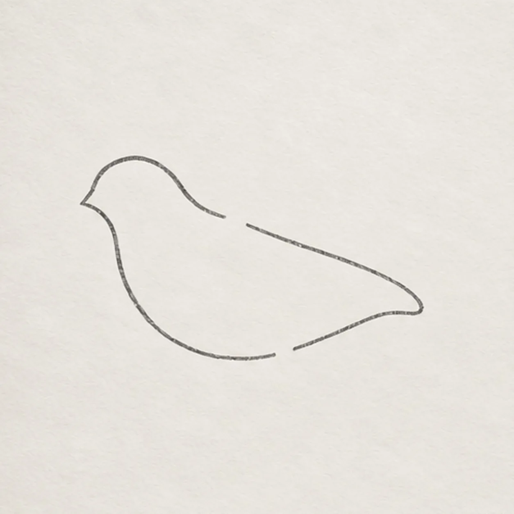
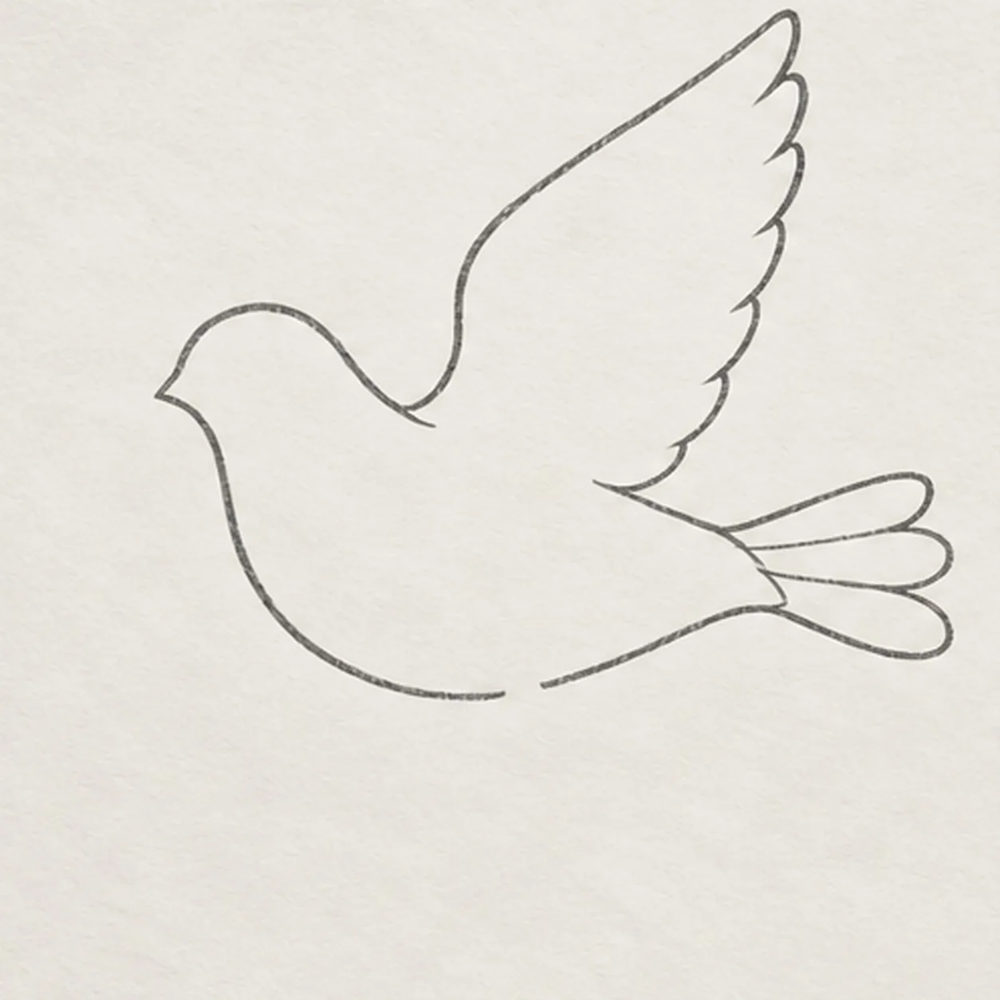
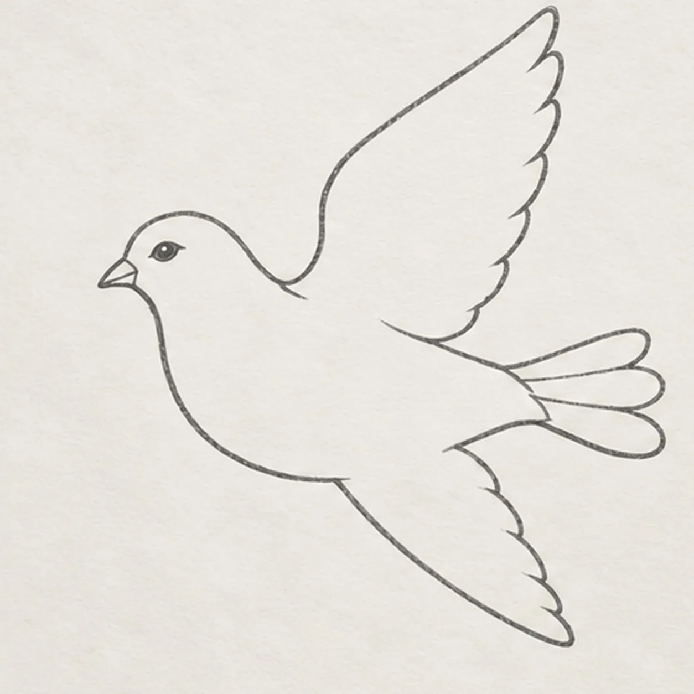
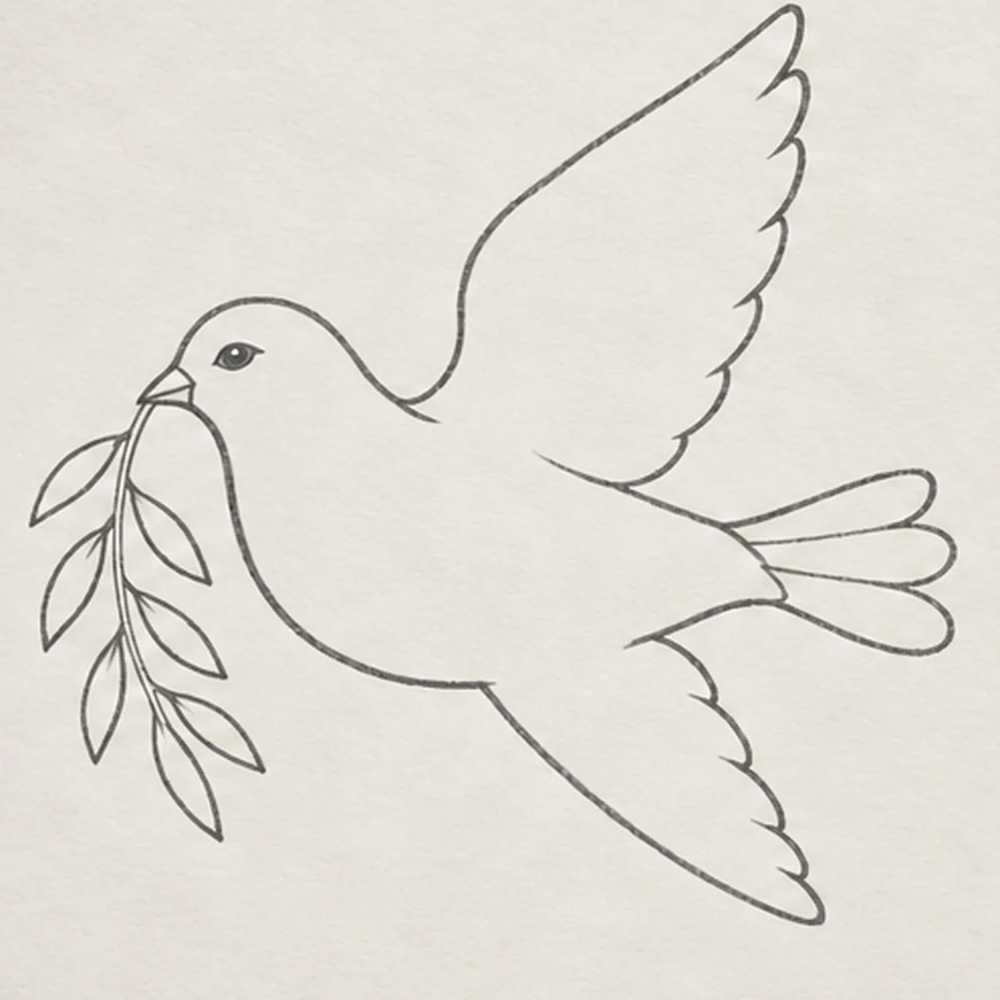
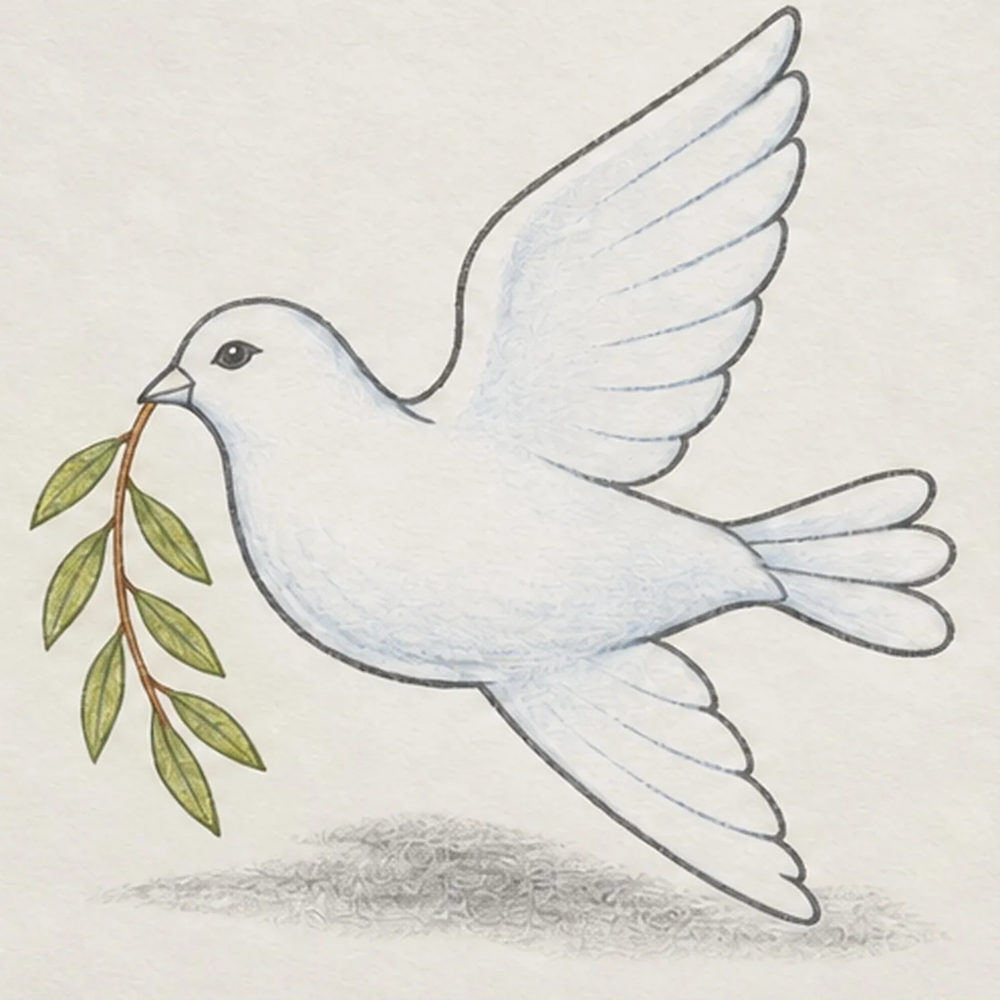

From the archive
Let's draw a peace dove
Treat this as one small practice round: build the subject lightly, notice the shapes, then darken only the lines that help the finished sketch.
-
01

Shape the flying dove
Start at the forehead, curve around the head into the breast and belly, taper toward the tail base, then return along the back to the neck. Leave one broad gap high on the back and a shorter gap beneath the body for the two wings.
Sketch tip: Ghost the long body curve twice before touching down. The two clean gaps reserve the wings so no keeper contour needs to be erased later.
-
02

Lift the near wing and tail
From the high back gap, sweep one broad wing upward and back, then return it to the same attachment with a shallow inner edge. At the rear body, fan exactly three tapered tail feathers from one shared base.
Sketch tip: Trace both wing attachments with your finger and count all three tail feathers before moving on.
-
03

Add the far wing and face
Use the lower reserved gap to attach one narrower wing sweeping down and right behind the body. Add one short pointed beak at the face and one small almond eye with its pupil aimed forward.
Sketch tip: Keep the lower wing clearly behind the body. Its empty-space angle should echo the raised wing without matching it exactly.
-
04

Place the olive branch
Touch one slender curved twig to the beak tip and angle it down toward the lower left. Attach exactly seven narrow leaves in an alternating rhythm, keeping every stem joint visible and the first leaf clear of the dove's face.
Sketch tip: Count the seven leaves from the beak outward and vary their length slightly while keeping every leaf attached to the same twig.
-
05

Set feathers and quiet color
Pull five long feather divisions through the raised wing and three through the lower wing, following each wing's sweep. Add a few curved body marks and one broken shadow beneath the bird, then layer pale blue gray on the dove, olive on all seven leaves, warm brown on the twig, and cool graphite in the shadow.
Sketch tip: Use the side of each pencil and pull with the flight direction. Preserve open paper along the upper wing and breast instead of filling every area.
-
06

Deepen the peaceful flight
Deepen selected chest, wing, tail, beak, eye, twig, and leaf edges with 2B graphite. Reinforce the established blue-gray, olive, and warm-brown pencil lightly, preserve the open highlights, and soften the same broken shadow without adding any new contour.
Sketch tip: Count two wings, three tail feathers, seven leaves, five upper feather groups, and three lower groups, then stop while the paper tooth remains visible.


![Handmade graphite and restrained colored-pencil sketch of one left-facing pirate sailing ship with one warm-brown curved wooden hull, one blank stern cabin, one center mast, exactly two square cool-gray sails with two curved seams each, one forked muted-red pennant, one diagonal bowsprit, exactly three taut rigging lines, exactly three round hull portholes, exactly three broken desaturated-blue wave bands, exactly two cool-gray cloud wisps, exactly two open-paper sail highlights, and visible paper tooth](../assets/pirate-sailing-ship-at-sea-finished-v1.webp)